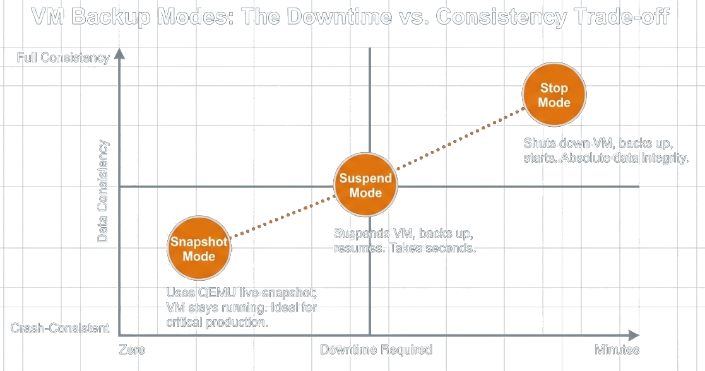
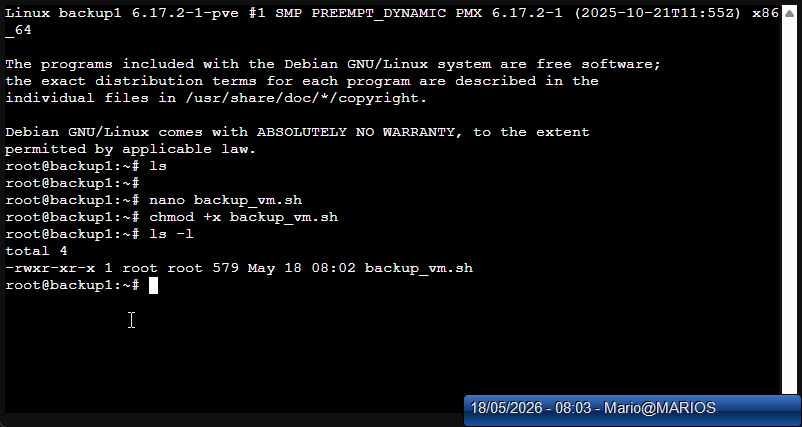
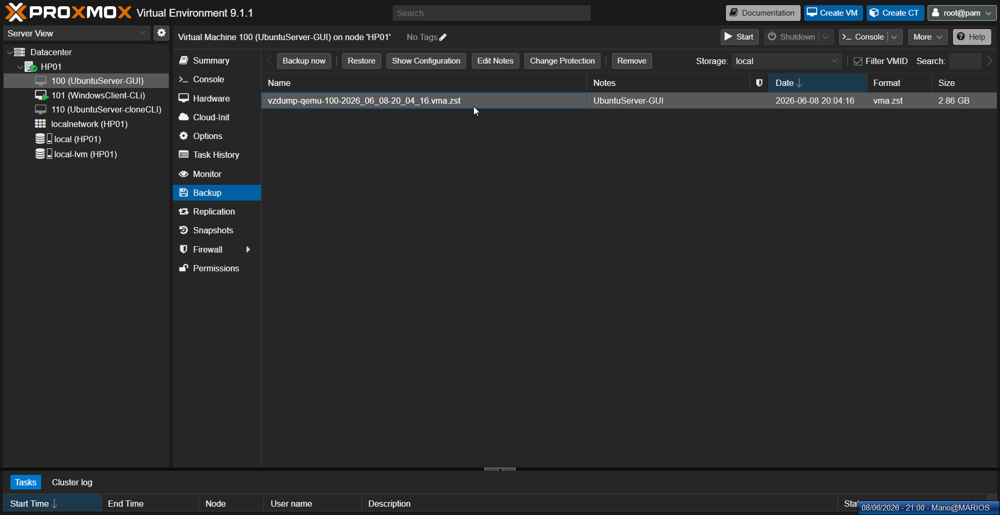

VM Backup &
Hypervisor Backup
Our specialization in the VIRCL project. Two layers of protection, implemented on Proxmox VE and compared with VMware.
Project Overview
Deploy two Type-1 hypervisors across four physical servers. Create virtual machines, integrate remote storage, specialize in VM Backup & Hypervisor Backup at both layers, and compare the two platforms head-to-head.
Entering the infrastructure…
Two layers. One backup strategy.
What is a VM backup?
A VM backup captures the entire virtual machine at a point in time: disks, configuration, and optionally RAM. If the VM is corrupted, infected, or accidentally deleted, the backup is the only way back.
What is a hypervisor backup?
While the VM backup protects the workload, the hypervisor backup protects the platform: cluster configuration, network bridges, storage definitions, users, and permissions.
Why this matters
Every business runs on virtualized infrastructure. Ransomware, hardware failure, and human error are not hypothetical — they are daily events. A backup strategy is not optional.
RPO & RTO: the two numbers that define your risk
If your last backup was 24 hours ago, your RPO is 24 hours. Every transaction in that window is gone.
A full VM restore takes minutes. Rebuilding a hypervisor from scratch takes hours or days.
Two different failures.
Two different backups.
VM Backup — Full Machine State
A VM backup is not a file copy. It captures the entire machine state: disk blocks, OS configuration, installed applications, and optionally live RAM. When restored, the VM boots exactly as it was — no reinstallation, no reconfiguration, no patching gaps.
Hypervisor Backup — The Infrastructure Blueprint
A hypervisor backup captures the platform topology: network bridges, storage mappings, virtual switches, resource pools, and access controls. It is the blueprint that tells the infrastructure how to host the VMs. Without it, you have the machines but nowhere to run them.
Three backup modes. One trade-off: downtime vs consistency.
Snapshot
QEMU live snapshot — the VM keeps running while the backup is taken.
Consistency: crash-consistent
Use for: production VMs
Suspend
The VM is paused, backed up, then resumed — a short freeze for a cleaner state.
Consistency: better
Use for: sensitive applications
Stop
Full shutdown, backup, restart — nothing changes on disk during the backup.
Consistency: full
Use for: maintenance windows

A snapshot is not a backup.
A snapshot is a delta disk that depends on the base disk. When the storage underneath dies, the snapshot dies with it. Real backups live on separate storage.
Three copies of the data, on two different media, one off-site. Ours live on the CLOIF2 NAS.
The verdict.
Two approaches. One goal.
Proxmox VE integrates backup directly into the hypervisor. VMware vSphere relies on third-party tools from the ecosystem. Both protect VMs and hosts, but the path, cost, and control differ.
| Proxmox | VMware | Better | |
|---|---|---|---|
| VM backup tool | vzdump, built in | 3rd party (Veeam, …) | Proxmox |
| Backup format | VMA + ZSTD | VMDK + VMX | Tie |
| Hypervisor config | tar /etc/pve, CLI only | vCenter backup, GUI | VMware |
| Enterprise option | PBS, free | Veeam, ≈ $400+ / socket / year | Proxmox |
Proxmox: backup is built in.
GUI backup
vzdump ships with the hypervisor — snapshot mode, ZSTD, straight from the web UI.
CLI backup
The same engine scripted: vzdump 100 --mode snapshot --compress zstd
Custom script
My bash wrapper adds logging to /var/log/vm_backup.log for an audit trail.
Scheduled, to the NAS
Weekly job to the CLOIF2 NAS over NFS, retention: keep last 3 — no human required.
VMware: backup is an ecosystem.
- +CBT + VADP: mature APIs built exactly for incremental backups
- +vCenter config backup is built in and can be scheduled
- +Huge tool ecosystem: Veeam, Rubrik, Cohesity
- −No native VM backup tool: third-party software required
- −And it is paid — licensing decides what you get
Now live: backup, restore, and the fix.
GUI backup
VM → Backup → Backup now: snapshot mode, ZSTD, target: NAS storage.
CLI backup
vzdump 100 --mode snapshot --compress zstd — same engine, scriptable.
Backup script
My bash wrapper with logging to /var/log/vm_backup.log.
Restore
qmrestore backup.vma.zst 200 — the proof the backup actually works.
Hypervisor config
tar -czf hp01-config.tar.gz /etc/pve … — the second layer, 15 KB that saves a rebuild.
# back up a running VM, no downtime root@HP01:~# vzdump 100 --mode snapshot --compress zstd INFO: starting backup of VM 100 INFO: backup mode: snapshot INFO: vzdump-qemu-100-…vma.zst (2.86 GB) INFO: backup finished successfully # restore to a new VM id — the real test root@HP01:~# qmrestore vzdump-qemu-100-….vma.zst 200 restore vma archive … progress 100% OK # back up the hypervisor config root@HP01:~# tar -czf hp01-config.tar.gz \ /etc/pve /etc/network/interfaces /etc/hosts … hp01-config-20260608.tar.gz (15 KB)


What went wrong: the NFS problem
"Read-only file system"
Adding the NFS share to Proxmox failed — backups could not be written to the NAS at all.
rw, no_root_squash
The OpenMediaVault export was read-only. Changed the NFS share options to rw,no_root_squash, remounted, and verified with a test write.
Never trust an unwritten target
Verify export options on both ends before relying on a backup target — and test a restore, not just the backup job.
Six things to remember.
A snapshot is not a backup.
It depends on the base disk — when the storage dies, the snapshot dies too.
Always two layers.
Back up the VMs and the hypervisor config — one without the other protects nothing.
Snapshot mode for production.
Zero downtime; keep suspend and stop for maintenance windows.
Separate storage, 3-2-1.
Three copies, two media, one off-site — mine live on the CLOIF2 NAS.
A backup only counts once tested.
Every backup here was verified with qmrestore — restore is the real proof.
Never trust an unwritten target.
Verify export options on both ends before relying on a backup target.
Questions?
We are happy to answer.